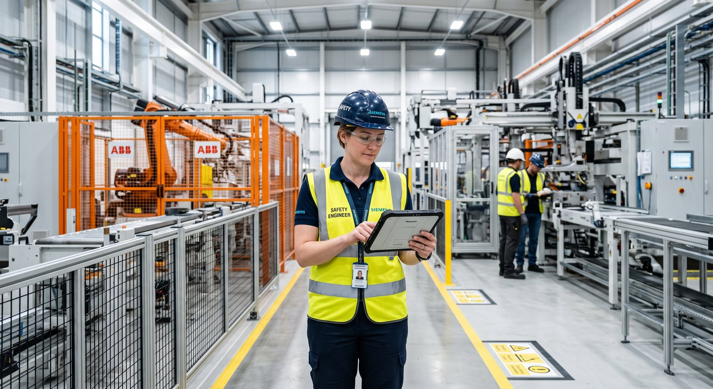

Imagen de portadaPrompt IA: Industrial safety engineer holding a digital tablet conducting an audit on a clean modern manufacturing floor, heavy equipment in background, professional corporate aesthetic, bright lighting.Introducción
Ofrecer productos de alta calidad ya no es suficiente en el mercado industrial moderno; los clientes y auditorías internacionales demandan que la fabricación se realice protegiendo al personal y reduciendo el impacto ambiental. Aquí radica la importancia del Sistema de Gestión Integrado (SGI).
Las Tres Normas Fundamentales
- ISO 9001 (Gestión de Calidad): Asegura que todos los procesos, desde la recepción de materia prima hasta la entrega final del producto mecanizado, mantengan estándares homogéneos de excelencia.
- ISO 14001 (Gestión Ambiental): Modera la huella ecológica de las operaciones de taller, gestionando residuos peligrosos, lubricantes de corte y consumo energético.
- ISO 45001 (Seguridad y Salud en el Trabajo): Previene riesgos laborales en entornos de mecanizado pesado, soldadura y pruebas de presión hidrostática.
Beneficios para el Cliente Final
Trabajar con un proveedor certificado en el SGI garantiza:
- Cero retrasos por accidentes laborales dentro del taller.
- Trazabilidad documental ante cualquier auditoría externa.
- Menor tasa de fallas y devoluciones por inconformidad de producto.
Conclusión y Soluciones PSI
En Petroservicios Industriales (PSI) basamos nuestras líneas industriales en los principios de ISO 9001, 14001 y 45001, garantizando productos robustos elaborados bajo prácticas responsables y seguras. Haz tus pedidos con la tranquilidad de trabajar con un aliado certificado.
¿Necesitas apoyo técnico o una cotización?
El equipo de Petroservicios Industriales está listo para ayudarte con inspección, fabricación y certificación.
Contáctanos →